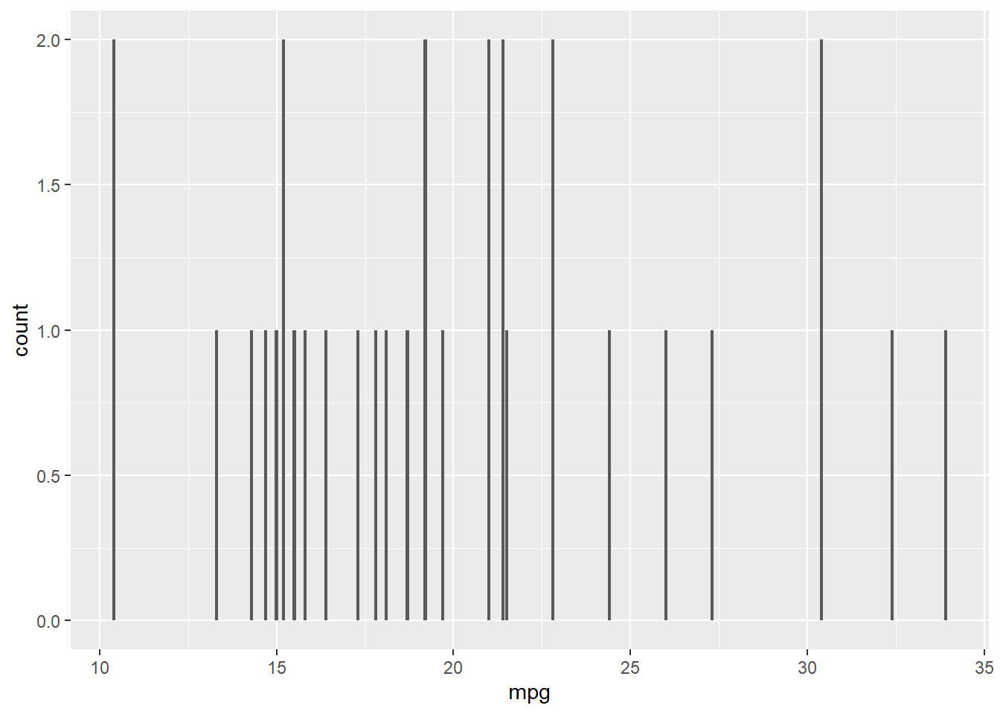

Chapter 2 Data sources
djkabviueiUGFnkch
## # A tibble: 6 x 124
## ST STATE ST_ABBR COUNTY FIPS LOCATION AREA_SQMI E_TOTPOP M_TOTPOP E_HU
## <chr> <chr> <chr> <chr> <chr> <chr> <dbl> <dbl> <dbl> <dbl>
## 1 19 IOWA IA Hancock 19081 Hancock~ 571. 10888 0 5311
## 2 18 INDIANA IN Miami 18103 Miami C~ 374. 35901 0 15433
## 3 20 KANSAS KS Staffo~ 20185 Staffor~ 792. 4214 0 2339
## 4 18 INDIANA IN Montgo~ 18107 Montgom~ 505. 38276 0 16638
## 5 18 INDIANA IN Rush 18139 Rush Co~ 408. 16704 0 7493
## 6 19 IOWA IA Bremer 19017 Bremer ~ 435. 24782 0 10314
## # ... with 114 more variables: M_HU <dbl>, E_HH <dbl>, M_HH <dbl>, E_POV <dbl>,
## # M_POV <dbl>, E_UNEMP <dbl>, M_UNEMP <dbl>, E_PCI <dbl>, M_PCI <dbl>,
## # E_NOHSDP <dbl>, M_NOHSDP <dbl>, E_AGE65 <dbl>, M_AGE65 <dbl>,
## # E_AGE17 <dbl>, M_AGE17 <dbl>, E_DISABL <dbl>, M_DISABL <dbl>,
## # E_SNGPNT <dbl>, M_SNGPNT <dbl>, E_MINRTY <dbl>, M_MINRTY <dbl>,
## # E_LIMENG <dbl>, M_LIMENG <dbl>, E_MUNIT <dbl>, M_MUNIT <dbl>,
## # E_MOBILE <dbl>, M_MOBILE <dbl>, E_CROWD <dbl>, M_CROWD <dbl>, ...